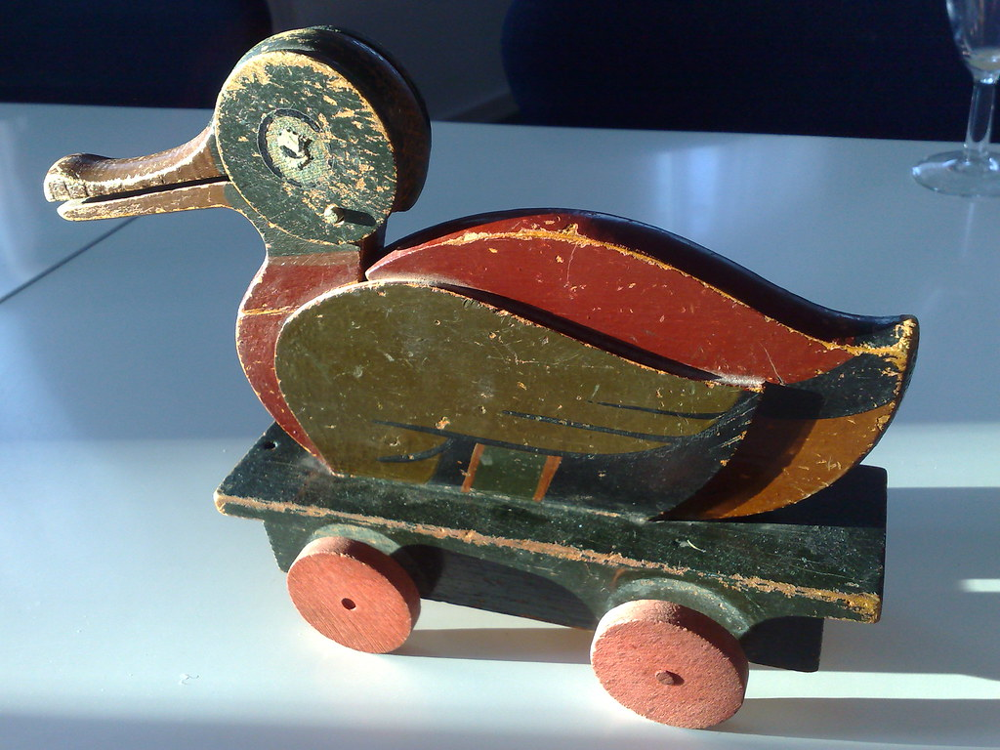
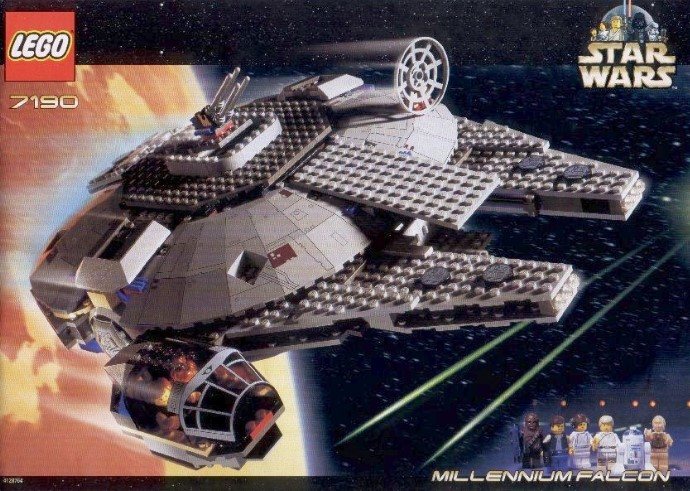

The Evolution of Lego from Humble Beginnings to Global Phenomenon
Lego's story began in a small carpentry workshop in Billund, Denmark, when Ole Kirk Christiansen started making wooden toys during the Great Depression. The name “Lego” comes from the Danish words **“leg godt”**, meaning **“play well”**. In 1947, Lego made a groundbreaking move by introducing plastic injection molding, leading to the birth of the iconic interlocking brick system in 1958. This innovative design allowed bricks to firmly connect while remaining easily detachable, making them highly versatile and durable. The introduction of themed sets, such as Lego Town and Lego Space in the 1970s, revolutionized play by encouraging storytelling and imaginative world-building.
As Lego grew in popularity, it expanded beyond toy bricks into various forms of entertainment. The 1990s and early 2000s saw the launch of the Lego video game series and the first licensed sets, such as **Star Wars and Harry Potter**, which brought fans' favorite franchises into Lego form. The company continued to innovate with lines like Lego Technic, which introduced gears and motors for functional builds, and Lego Architecture, which celebrated real-world landmarks. Today, Lego remains a dominant force in the toy industry, embracing digital experiences and sustainability efforts while staying true to its core mission—**inspiring creativity through play**.